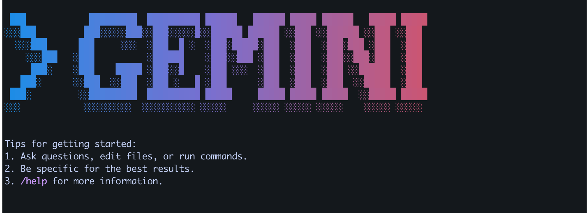

This post is an introduction to the Gemini CLI, a powerful tool that brings Google’s Gemini models to your command line interface.

What is Gemini CLI?
Gemini CLI is a command-line interface that allows you to interact with Google’s Gemini large language models directly from your terminal. It’s designed for developers, data scientists, and anyone who wants to leverage the power of AI for their daily tasks without leaving the command line.
Key Features
Direct access to Gemini models: Interact with Gemini Pro and other models.
Code generation and understanding: Ask for code snippets, get explanations of code, and even get help with debugging.
File system interaction: Gemini CLI can read your files, help you search for content, and even apply changes to your code.
Shell command execution: Run shell commands directly through the CLI.
Context-aware: Gemini CLI can understand the context of your project and provide more relevant assistance.
Introduction to the Gemini CLI
The Gemini CLI is a command-line interface that allows you to interact with Google’s Gemini models directly from your terminal. It provides a convenient way to experiment with Gemini, test prompts, and build powerful shell scripts that leverage the capabilities of large language models.
This guide will walk you through the process of installing and configuring the Gemini CLI.
Prerequisites: Node.js Installation
The Gemini CLI is distributed as an npm package, so you need to have Node.js and npm installed on your system. The recommended way to install Node.js is by using the Node Version Manager (nvm).
Code
# Download and install nvmcurl -o- https://raw.githubusercontent.com/nvm-sh/nvm/v0.39.3/install.sh | bash# Activate nvm for the current shell sessionsource ~/.nvm/nvm.sh# Install the latest stable version of Node.jsnvm install 20# Verify the installationnode -vnpm -v
Installing the Gemini CLI
Once you have Node.js and npm ready, you can install the Gemini CLI globally on your system.
Code
# Install the Gemini CLI packagenpm install -g @google/gemini-cli
Upgrading the Gemini CLI
To ensure you have the latest features and bug fixes, you can upgrade the package from time to time.
Code
# Upgrade the Gemini CLI to the latest versionnpm upgrade -g @google/gemini-cli
Configuration
To use the Gemini CLI, you need to authenticate with your Google account and configure your project.
Login with Your Google Account
You can either log in with your Google Cloud account or use an API key.
Option 1: Login with Google Cloud Account
Code
# Set your Google Cloud project IDexport GOOGLE_CLOUD_PROJECT="your-google-cloud-project-id"
or save the GOOGLE_CLOUD_PROJECT into environment variable.So that do not need to re enter everytime
Alternatively, you can use an API key for authentication.
Code
# Set your Gemini API key as an environment variableexport GEMINI_API_KEY="your-gemini-api-key"
Set the Location
You also need to specify the Google Cloud location where your resources will be managed.
Code
# Set the Google Cloud locationexport GOOGLE_CLOUD_LOCATION='us-central1'
Running the Gemini CLI
Once everything is set up, you can run the Gemini CLI to start interacting with the models.
Code
# Run the Gemini CLIgemini
Running the Gemini CLI with agreement to all access
Code
# Run the Gemini CLIgemini --yolo
Running the Gemini CLI with agreement to all access and with a specific model
Code
# Run the Gemini CLIgemini --yolo --model gemini-2.5-flash
Tool
Memory Tool (save_memory)
The tool appends the provided fact to a special GEMINI.md file located in the user’s home directory (~/.gemini/GEMINI.md). This file can be configured to have a different name.
Once added, the facts are stored under a ## Gemini Added Memories section. This file is loaded as context in subsequent sessions, allowing the CLI to recall the saved information.
Code
save_memory(fact="R program code chunk in quarto:```{r}```")
Code
save_memory(fact="Python program code chunk in quarto:```{python}```")
The Gemini CLI is a powerful tool for developers and enthusiasts who want to explore the capabilities of Google’s Gemini models from the command line. With its simple installation and configuration process, you can quickly start leveraging the power of generative AI in your daily workflows.
---title: "Introduction to Gemini CLI"subtitle: "Your AI assistant in the terminal"author: "Tony D"date: "2025-07-18"categories: - Tool - AI - CLIexecute: warning: false error: false eval: false---This post is an introduction to the Gemini CLI, a powerful tool that brings Google's Gemini models to your command line interface.# What is Gemini CLI?Gemini CLI is a command-line interface that allows you to interact with Google's Gemini large language models directly from your terminal. It's designed for developers, data scientists, and anyone who wants to leverage the power of AI for their daily tasks without leaving the command line.# Key Features- **Direct access to Gemini models:** Interact with Gemini Pro and other models.- **Code generation and understanding:** Ask for code snippets, get explanations of code, and even get help with debugging.- **File system interaction:** Gemini CLI can read your files, help you search for content, and even apply changes to your code.- **Shell command execution:** Run shell commands directly through the CLI.- **Context-aware:** Gemini CLI can understand the context of your project and provide more relevant assistance.# Introduction to the Gemini CLIThe Gemini CLI is a command-line interface that allows you to interact with Google's Gemini models directly from your terminal. It provides a convenient way to experiment with Gemini, test prompts, and build powerful shell scripts that leverage the capabilities of large language models.This guide will walk you through the process of installing and configuring the Gemini CLI.# Prerequisites: Node.js InstallationThe Gemini CLI is distributed as an npm package, so you need to have Node.js and npm installed on your system. The recommended way to install Node.js is by using the Node Version Manager (nvm).```{python}# Download and install nvmcurl -o- https://raw.githubusercontent.com/nvm-sh/nvm/v0.39.3/install.sh | bash# Activate nvm for the current shell sessionsource ~/.nvm/nvm.sh# Install the latest stable version of Node.jsnvm install 20# Verify the installationnode -vnpm -v```# Installing the Gemini CLIOnce you have Node.js and npm ready, you can install the Gemini CLI globally on your system.```{python}# Install the Gemini CLI packagenpm install -g @google/gemini-cli```## Upgrading the Gemini CLITo ensure you have the latest features and bug fixes, you can upgrade the package from time to time.```{python}# Upgrade the Gemini CLI to the latest versionnpm upgrade -g @google/gemini-cli```# ConfigurationTo use the Gemini CLI, you need to authenticate with your Google account and configure your project.## Login with Your Google AccountYou can either log in with your Google Cloud account or use an API key.### Option 1: Login with Google Cloud Account```{python}# Set your Google Cloud project IDexport GOOGLE_CLOUD_PROJECT="your-google-cloud-project-id"```or save the GOOGLE_CLOUD_PROJECT into environment variable.So that do not need to re enter everytime#### check using zsh or bash```{python}echo $SHELL```#### for zsh```{python}echo 'export GOOGLE_CLOUD_PROJECT="your-google-cloud-project-id"'>>~/.zshrcsource ~/.zshrc```#### for bash```{python}echo 'export GOOGLE_CLOUD_PROJECT="your-google-cloud-project-id"'>>~/.bashrcsource ~/.bashrc```#### check wheather added or not```{python}echo $GOOGLE_CLOUD_PROJECT```### Option 2: Login with API KeyAlternatively, you can use an API key for authentication.```{python}# Set your Gemini API key as an environment variableexport GEMINI_API_KEY="your-gemini-api-key"```## Set the LocationYou also need to specify the Google Cloud location where your resources will be managed.```{python}# Set the Google Cloud locationexport GOOGLE_CLOUD_LOCATION='us-central1'```# Running the Gemini CLIOnce everything is set up, you can run the Gemini CLI to start interacting with the models.```{python}# Run the Gemini CLIgemini```# Running the Gemini CLI with agreement to all access```{python}# Run the Gemini CLIgemini --yolo```# Running the Gemini CLI with agreement to all access and with a specific model```{python}# Run the Gemini CLIgemini --yolo --model gemini-2.5-flash```# Tool## Memory Tool (save_memory)The tool appends the provided fact to a special GEMINI.md file located in the user's home directory (~/.gemini/GEMINI.md). This file can be configured to have a different name.Once added, the facts are stored under a ## Gemini Added Memories section. This file is loaded as context in subsequent sessions, allowing the CLI to recall the saved information.````{bash} save_memory(fact="R program code chunk in quarto:```{r}```")````````{bash} save_memory(fact="Python program code chunk in quarto:```{python}```")````view the saved memory file```{bash}cat ~/.gemini/GEMINI.md```or open with sublime text editor```{bash}echo'export PATH="/Applications/Sublime Text.app/Contents/SharedSupport/bin:$PATH"'>> ~/.zprofilesubl ~/.gemini/GEMINI.md```# ConclusionThe Gemini CLI is a powerful tool for developers and enthusiasts who want to explore the capabilities of Google's Gemini models from the command line. With its simple installation and configuration process, you can quickly start leveraging the power of generative AI in your daily workflows.# Reference- [Gemini CLI on GitHub](https://github.com/google-gemini/gemini-cli)- [Node.js Downloads](https://nodejs.org/en/download)